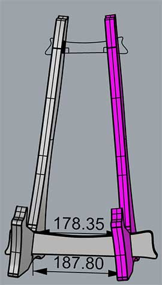
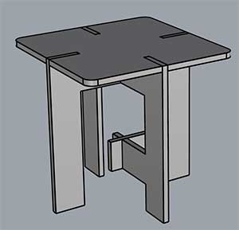
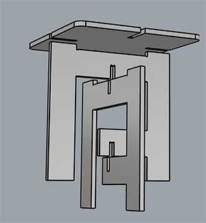
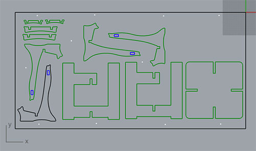
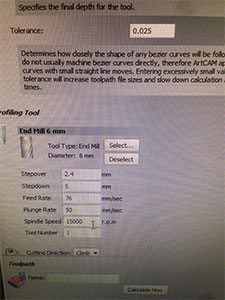

8 - Computer-Controlled Machining
Intro
The assignment of this week was to use a CNC machine to make something big.
Making something big
I decided to make something not huge but useful. I needed a guitar stand and in the Fablab we needed a coffe table for our breaks. To start I checked several website to get inspired like AtFab and OpenDesk . Moreover I start to think about how to join pieces and, as a consequence, the different shapes I can create. I found very useful the CNC panel joinery notebook from Make. It is a review of many different joint types that could be used for different needs.
It is very important to know how to make joints with the CNC. Indeed the tool of the machine is rounded so it is not possible to make 90° angles (it's easy only when there are external corners). As can be seen from the Make notebook the end mill make a rounded corner. So it's important to make an extra cut for a perfect snapping

 .
.
Another important aspect is to understand the tolerance of the CNC-router and also if the end mill cuts inside, outside or on the line of the model (this last setting coul be desinide in the CNC control panel). In the Fablab we have a big CNC router that has a working area of 2100 x 1100 mm.
We payed a lot of attention to the safety rules as the machine is dangerous. In the room there is a photodetector barrier to stop the machine if someone gets too close.
The wood used was a panel of OSB/3 of 1050 x 2050 centimeters, 18 millimeters thick. After several tests with simple joints we decided to use a tolerance of +0,5mm to have good joints (not too loose not too tight).
I designed a coffe table and a guitar stand. I used Rhino to design the model. I started from the outline then I made the joints. For both objects I made a 3d model to test the correct matching of the joints then I make a 2D model for the CNC router. I drew up also the drilling holes to fix the wood table to the sacrificial plate. So I was sure to put the screw in the right place.
To design the guitar stand I used the measure of my guitar. I paid attention to the center of gravity, to be sure that the guitar will not fall down. The tricky part was to design angled joints, but I found very useful to create a 3D model.

For the coffee table I choose a simple design. It is made by 3 squares. One for the top and two to hold it. I used a 3D model to verify the joints and the procedure to mount it.

On the Rhino file I made 3 levels: one for the inside cut (blue) , one for the outside cut (green) and one for the drilling (white) (to put screws to fix the table).

To send the model to the CNC-router it had to be processed by a CAM program. I place the model in the negative quadrant and exported it from Rhino in .dxf format. I imported it in the CNC design software, then I set several parameters. One of the most important was the cutting depth, that had to be bigger that the panel thickness (to be sure to cut it). Of course under the panel there was a sacrifical panel, to avoid damages to the machine.

With the ArtCam software I selected different settings to generate the profile.As the material thickness is 18 mm I setted the finish depth at 19 mm so I'm sure it will be cutted (there is a sacrificial board below!). Then I set feed rate: 76 mm/s, plunge: 50 mm/s, spindle: 15000 rpm.I also added bridges to the cut to avoid objects to fall.
I exported 3 files: one for the drilling to fix the panel, one for the exterior cuts and one for the interior cuts. Before sending the files I set up the X,Y, and Z origin of the machine. I mounted the 6mm tool. I planned different working steps:
- 1. Drilling holes to fix the panel: I send the file only with the holes to be drilled.
- 2. Fixing the screws (manually): I fixed the screws in the holes drilled.
- 3. Cutting the holes: make the interior cuts. It is important to do it before cutting the profile as pieces can move after that.
- 4. Cutting the profiles
- Here is the video of the machine drilling the holes:
drilling from Massimiliano Dibitonto on Vimeo.
Here you can see the cutting:
CNC cutting from Massimiliano Dibitonto on Vimeo.
And it's very interesting to see the control panel while the machine is working. It shows the GCODE and the model with the current progress of the machine.
CNC control panel from Massimiliano Dibitonto on Vimeo.
this is the result:
After this I refined the parts with sandpaper especially to avoid splinters. Below you find the final objects:
Guitar stand:
And the table:
A detail of the joint:

 Attribution, non-commercial, share alike.
Attribution, non-commercial, share alike.